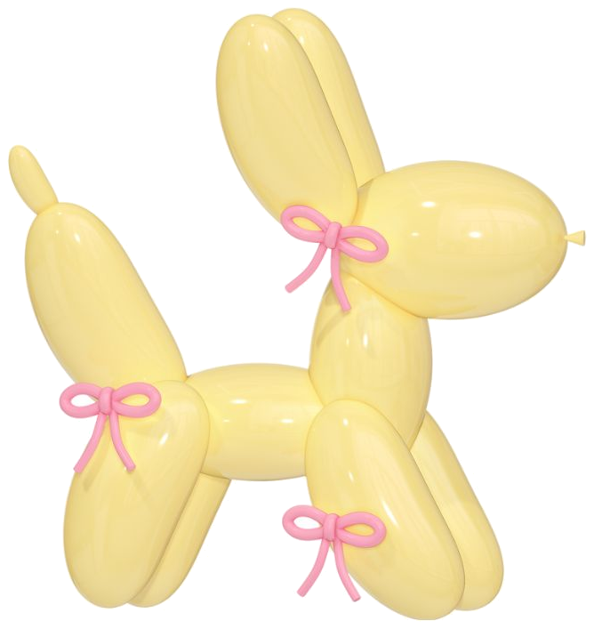
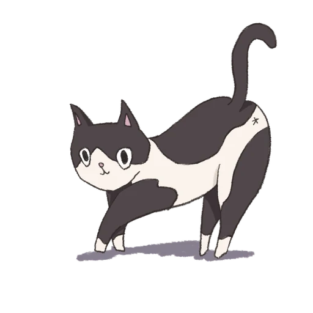
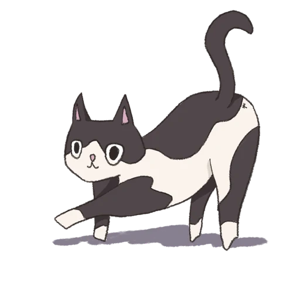
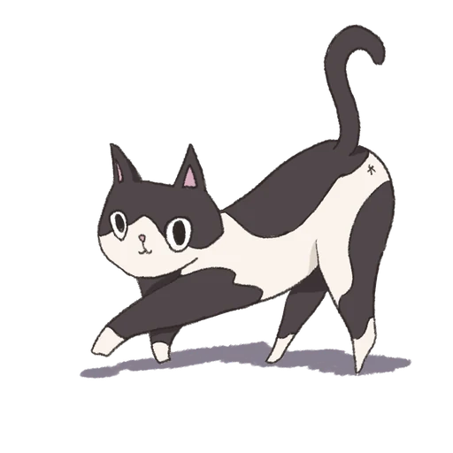
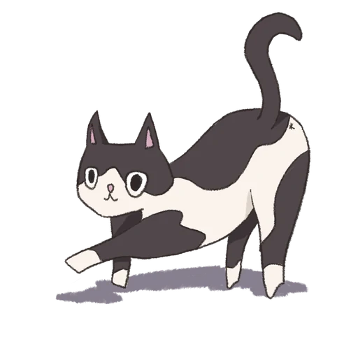
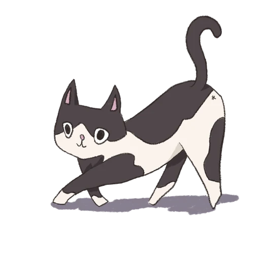
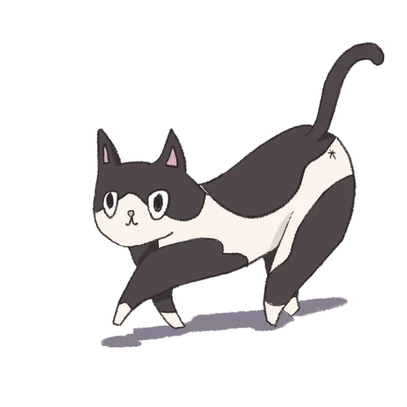

能理解需求，也能把事情推進到落地。
具備專案企劃、活動執行、企業開發與現場營運經驗。
工作中經常需要在企業窗口、品牌、供應商與內部團隊之間整理資訊、確認需求與推進進度，因此習慣先掌握專案目的，再拆解工作內容、時程與合作角色。
我的優勢不只在執行既定任務，而是在資訊分散、角色較多或現場快速變動的情況下，仍能整理優先順序、維持溝通一致，並讓工作持續往下一步推進。
藝術與設計背景則讓我在專案執行之外，也具備視覺與內容溝通能力，能理解企劃內容如何被清楚地傳達與呈現。
專案與活動實績 ✦
60
Corporate Event Participants
單場企業論壇參與規模
Corporate Summit / Event Execution
4
Large-scale Event Projects
百人規模大型活動企劃與執行經驗
2.5Y
Frontline Operations Experience
第一線營運、現場協調與突發問題處理經驗
6+
Stakeholder Types Coordinated
跨角色協作經驗
從需求釐清到落地執行的完整專案視角 ✦
REQUIREMENT
需求釐清
理解目標、對象、限制與執行條件
PLANNING
企劃與流程拆解
工作項目、時程、責任與執行流程
COORDINATION
跨方協調
企業窗口、合作方、供應商與內部團隊
EXECUTION
活動與現場執行
流程確認、資源調度、現場應變
FOLLOW-UP
專案後續
資料整理、合作追蹤與後續溝通
我能為專案帶來什麼 ✦
把模糊需求變成可執行工作。
能從目標、時程、角色與限制條件拆解需求，協助團隊建立清楚的下一步。
企業價值 降低資訊模糊造成的執行落差。
讓不同角色在同一套資訊上合作。
具企業窗口、品牌、供應商、講師、場地方與內部團隊溝通經驗。
企業價值 降低多方協作中的資訊斷層與溝通成本。
計畫能做，也能處理現場變化。
具活動現場與第一線營運經驗，能依照流程、時間與現場狀況調整執行優先順序。
企業價值 在變動環境中維持專案正常推進。
理解企業需求，也理解執行端限制。
具企業開發與客戶窗口接觸經驗，能將外部需求整理成內部與合作方可理解、可執行的資訊。
企業價值 縮短「客戶想要什麼」與「團隊實際怎麼做」之間的距離。
核心能力 ✦
PROJECT PLANNING & COORDINATION
專案企劃與跨方協作
將需求、角色與時程整理成清楚的執行架構，並持續推進專案進度。
EVENT EXECUTION & OPERATIONS
活動執行與現場管理
不只參與前期規劃，也具備第一線執行與現場調整能力。
CLIENT & PARTNER COMMUNICATION
客戶與合作方溝通
能在企業需求、合作條件與實際執行之間建立有效溝通。
進團隊能解決的專案問題 ✦
My Strengths
Selected Projects ✦
點一張塔羅牌，探索不同介紹







Contact Me!!
Let’s create something beautiful together ✦
{{ notice }}